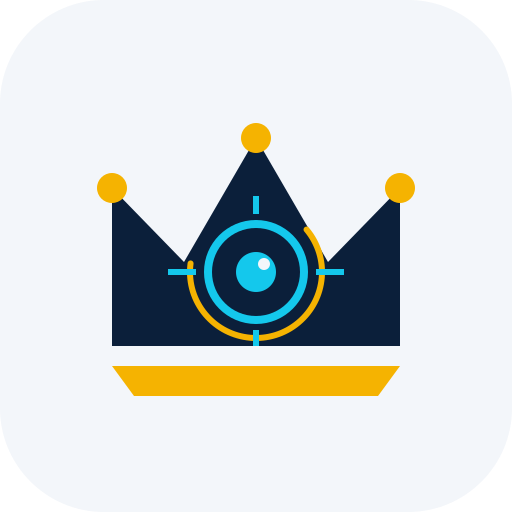

Status lalu lintas
–
Diperbarui – detik lalu

| Waktu | Lokasi | Jalur ROI | Semua jalur | Status | |
|---|---|---|---|---|---|
| Belum ada data | |||||
Kepadatan live tiap kamera dan rekomendasi rute tercepat
| Kamera | Ruas jalan (OSM) | Kelas / lajur | Kapasitas perkiraan | Kendaraan | Posisi pin |
|---|---|---|---|---|---|
| Memuat… | |||||
| Rute | Peran | Waktu tempuh (est.) | Jarak | V/C | Kepadatan | Aksi |
|---|---|---|---|---|---|---|
| Belum ada data | ||||||
| # | Kelas | Conf | Di ROI | Kotak (x1, y1 – x2, y2) | Ukuran |
|---|---|---|---|---|---|
| Belum ada hasil deteksi | |||||
Masukkan token admin (admin_token di config.yaml)
Perubahan langsung dipakai deteksi & perhitungan rute
| Rute | Ditutup | Status | Catatan | Waktu tempuh |
|---|
| ID | Nama jalan | Titik CCTV | Arah & alternatif | Kapasitas (kend/jam) | Normal (mnt) | Jarak (km) | Status jalur |
|---|
| Lokasi | Nama tampilan | Lat | Lng | Ambang padat | Ambang macet | Kapasitas kalibrasi | Sekarang |
|---|
| # | x | y |
|---|
Menyiapkan peta jalan Malang…
Kami perlu tahu Anda sedang di jalan mana, supaya bisa memberi tahu bila jalan di depan macet dan menunjukkan jalur lain.
Geser untuk mensimulasikan kepadatan di jalur utama (Jl. Gajayana – Sumbersari).
Data dari tabel greenflow_logs
| Waktu | Lokasi | Perangkat | Jalur ROI | Semua jalur | Mobil | Motor | Bus | Truk | Status | |
|---|---|---|---|---|---|---|---|---|---|---|
| Belum ada data | ||||||||||